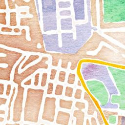

G-SPASE technical seminar in AIT has started since Aug. 29. This week, Associate Professor Kotake lectured system design and management for participant in Thailand.実験的海外教育活動としてG-SPASEセミナーをタイのアジア工科大学で開始しました。９月の週末の3日間を四人の講師が講義と実習を行います。第一週目はシステムデザインとマネージメントについての講義を行います。
{kind=link}
Submission to SPACE Development Forum 2013宇宙開発フォーラム2013へG-SPASEのポスターを掲示
GESTISS shows G-SPASE poster at Space Development Forum 2013.
http://www.sdfec.org
here.
GESTISS shows G-SPASE poster at Space Development Forum 2013.
http://www.sdfec.org
here.
Group Photo at the G-SPASE Summer School 2013G-SPASEサマースクール2013集合写真
Summer School Now !!サマースクールはじまりました！
G-SPASE Summer School 2013G-SPASE Summer School 2013
(30, July – 1, August at the Univ. of Tokyo|Komaba Research Campus)
more information -> http://gestiss.org/g-spase/summerschool/


100 m
500 ft
MapsMarker.com (Leaflet/icons/QR) — マップ: Map tiles: Stamen Design, CC BY 3.0. Data: OpenStreetMap, CC BY SA
G-SPASE Summer School 2013
(30, July – 1, August at the Univ. of Tokyo|Komaba Research Campus)
more information -> http://gestiss.org/g-spase/summerschool/
100 m
500 ft
MapsMarker.com (Leaflet/icons/QR) — マップ: Map tiles: Stamen Design, CC BY 3.0. Data: OpenStreetMap, CC BY SA